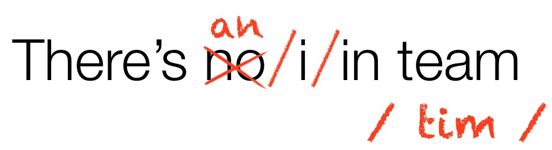

# The Complexity of Speech ### Will Styler - LIGN 6 --- ### Today's Plan - Your writing system is hiding things from you - Transcription vs. Writing systems - Phone boundaries are lies - A bit of prosody --- ### Online Audio IPA Charts are a useful resource - <http://www.internationalphoneticalphabet.org/ipa-sounds/ipa-chart-with-sounds/> --- ## Your writing system sucks --- ### Lies your writing system tells you - The letter “C” - “ng” is usually /ŋ/, as in “ring” /ɹɪŋ/ - “th” can be /θ/ or /ð/ - “x” is usually /ks/, as in axis /æksis/ - English does not allow double ('geminate') consonants - “soccer” is /sɑkə˞/, crass is /kɹæs/ --- ### More lies Sliced - /slaɪst/ - Buzzed - /bʌzd/ - Close (near) - /kloʊs/ - Close (a door) - /kloʊz/ --- ### Silent letters aren't real - “k” in “knee” - “b” in “lamb" - “e” in name - I will cry. --- ### There is no I in team -  --- ## 'Transcription' vs. the Writing System --- ### The writing system is untrustworthy - We can't trust it to tell us anything about what's *actually* in the speech signal - It doesn't tell the computer 'what to expect' - It squishes dialect differences - "I'm going to watch Downton Abbey" - **There is not a one-to-one mapping between speech sounds and written symbols** - ... and we need one to work with speech! --- ### Transcription is the Way - Write down the 'sequence of sounds' directly - Use a symbol set which captures the majority of sounds that might arise - The IPA, SAMPA, ARPABET - Make a 'dictionary' of expected pronunciations - ... but this is a problem because... --- ### Words don't have one transcribed 'equivalent' - You're always transcribing somebody else saying them - There is no such thing as an automatic IPA “translator” for written words, and there never could be - Some dictionaries give you IPA, but badly - Lexical resources give you transcriptions, but they're not universal! - This is in part because... --- ### Dialect differences show up in transcription --- ### RP (British) vs. MUSE - /əˈlumɪnəm/ vs. /aljuˈmɪnium/ - /ɡɑˈɹɑʒ/ vs. /ˈɡɛɹɑʒ/ --- <img class="r-stretch" src="img/sellyouriron.jpg"> --- - "Sell your iron to Walter Zion" - /sɛl jə˞ ajə˞n tə wɑltə˞ zajən/ - /sɛl jə ajən tə wɑltə zajən/ --- ### Oh, Boston - park the car in harvard yard - /pɑɹk ðə kɑɹ ɪn hɑɹvə˞d jɑɹd/ - /pɑ:k ðə kɑ: ɪn hɑɹvəd jɑ:d/ --- ### Transcription can pick up on 'words that aren't words' - “I said a hip, hop, the hibbie, the hibbie to the hip hip hop and you don’t stop the rocking to the bang bang boogie say up jump the boogie to the rhythm of the boogie the beat” - [ɑsɛdə hɪp hop ðəhɪbi ðe hɪbi təðə hɪp hɪp hɑpʰɑjɨ doʊn stɑp ðə ɹɑkɪn tʰəðə bejŋ bejŋ bʊɡi seɪ ʔʌp dʒʌmp ðə bʊɡi tʰəðə ɹɪðm ʌ ðʌ bʊɡidə bit] <audio controls> <source src="phonmedia/rappers_delight_excerpt.mp3" type="audio/mp3"> </audio> --- ### "Scatman" by Scatman John <audio controls> <source src="phonmedia/scatman_excerpt.mp3" type="audio/mp3"> </audio> <img src="phonmedia/scatmanIPA.png"> <!-- .element: class="fragment" --> --- ### "Wow, that's insane. But at least we can pick out the sequence of sounds..." - Not so fast... --- <img class="r-stretch" src="img/beads.jpg"> --- # Phone boundaries are tricky --- ### We've been talking about sequences of sounds - Sequences of speech gestures - "First, there's a voiced bilabial stop, then an /i/ vowel, then a voiceless alveolar stop" - Is that really true? --- <img class="r-stretch" src="humorimg/no_grumpycat.jpg"> --- ## Why do we say that? --- ### Because we can't see them --- <video controls src="video/ultrasound_northwind.mp4"></video> --- <video controls src="video/xray_kenstevens.mp4"></video> --- ### Because you're magical <center> <table> <tr> <th><h1>bad</h1></th> <th><h1>ban</h1></th> </tr> </table> </center> <audio controls> <source src="phonmedia/diss_hazel_BAD_nfor_ex_c.wav" type="audio/wav"> </audio> --- <center> <table> <tr> <th><h1>bomb</h1></th> <th><h1>bob</h1></th> </tr> </table> </center> <audio controls> <source src="phonmedia/diss_molly_BOMB_ofor_ex_c.wav" type="audio/wav"> </audio> --- <center> <table> <tr> <th><h1>bob</h1></th> <th><h1>bomb</h1></th> </tr> </table> </center> <audio controls> <source src="phonmedia/bob_CJ1_8_noised-2199.wav" type="audio/wav"> </audio> --- <center> <table> <tr> <th><h1>duck</h1></th> <th><h1>dunk</h1></th> </tr> </table> </center> <audio controls> <source src="phonmedia/chase_rhoh-dunk_noised-2194.wav" type="audio/wav"> </audio> --- <center> <table> <tr> <th><h1>bob</h1></th> <th><h1>bomb</h1></th> </tr> </table> </center> <audio controls> <source src="phonmedia/bomb_CJ1_8_noised-2198.wav" type="audio/wav"> </audio> --- <img class="r-stretch" src="humorimg/areyouawizard.png"> --- **We pay attention to tiny details!** --- <huge>bend</huge><br> <huge>/bɛnd/</huge> * **...but there's more to it than the symbols show us!** --- ### Coarticulation When we start preparing for the next sound *before it even begins* * In the word "bend", we start nasal airflow before the nasal /n/, *during the vowel* --- <huge>bend</huge><br> <huge>/bɛnd/</huge><br> <huge>/bɛ̃nd/</huge> --- ### You use coarticulation to hear missing sounds! <!--<img class="r-stretch" src="phonmedia/airflow_bend_annot_coart.png">--> <audio controls> <source src="phonmedia/bomb_CJ1_8_noised-2198.wav" type="audio/wav"> </audio> --- <img class="r-stretch" src="img/magic.jpg"> --- ### How we hear nasality was the topic of [my doctoral dissertation](https://wstyler.ucsd.edu/files/styler_dissertation_final.pdf) * Yes, that's a clickable link to a PDF - <img class="r-stretch" src="img/plug.jpg"> --- ### Because Key, Car - Tenth - Thin kids - Pine thugs - Play --- ### Phone Boundaries are not particularly real - Individual phones blend together in motion - Elements of some phones "bleed into" surrounding words - Phones are different depending on the adjacent phones --- ### At best, we can think of speech as a series of interconnected gestures <img class="r-stretch" src="phonmedia/articulatory_phonology_pan.jpg"> --- ## Why are we worried about this in LIGN 6? --- ### Why is this a problem for speech technology? - [k] isn't always [k] - We can't build phone detectors - Except maybe we can! - We need to think about sequences of phones - ... or even words --- ### How can this help us in speech technology? - There's additional information in these transitions --- ### All of this is not just "noise" - This is a feature, not a bug - ... but that doesn't mean it makes things easy - Speaking of not easy... --- # Prosody --- ### Sentences are more than a sequence of consonants and vowels - We can get all the words right and *completely* screw up a sentence --- ## Prosody The aspects of speech beyond individual phonetic segments used to express meaning --- ### Different aspects of Prosody - Intonation - Stress - Tempo - Pauses - Chunking --- ## Intonation The use of voice pitch to express information beyond the segmental contents - The intonational 'tune' is important to the meaning of a sentence --- ### Intonational tunes - "John's going to the park next week" - "Please pick up eggs, milk, taco sauce, cat food, bananas, snow peas" --- ## Stress Marking certain words as focal or important in the sentence - Each language does stress differently --- ### Stress is important - "No, I'm not going with Carol, I'm going with Karen" - "I'm buying Frank's car once he retires." --- ## Tempo The speed of speech - Hard to measure, but easy to understand --- ## Pauses The temporary cessation of speech and placement of prosodic boundaries --- ### Pauses are really interesting - You could ask Tina. Mike regularly asks her for help with his mom's obnoxious parrot. - They surprised Tina. Matt helped enormously with every aspect of the two-day party. - We saw talks by the President's two daughters, Bill Clinton and George Bush. - Let's eat, Grandma. --- ## Chunking The separation of elements of words into units and groupings - Chunking helps to understand subphrases --- ### Chunking examples - We're having coffee cake and honey - We're going to visit to Five Guys. - My dissertation committee, a duck, and three squirrels were sitting in the park. - I'd accept your late homework, but I'm all out of give-a-damn today --- ## Why are we talking about Prosody in LIGN 6? --- ### How is prosody problematic for speech technology? - We need to get it right - We need to be sensitive to it - It differs a great deal across people and dialects --- ### How is prosody helpful for speech technology? - It carries a lot of information - It provides cues to things missing in text - It's one of the things we're best at measuring! --- ### We've now got a rough handle on human speech - How we do speech - How we describe and transcribe speech - Why our writing system sucks - Why 'segments' is a dangerous idea - ... and what we're doing beyond the segments --- ### But I need to impress one thing on you. --- # Speech is impossibly hard, but we do it anyways --- ... but that's only because we're *really* awesome. --- ### Our ability to produce speech is *incredible* * We flap bits of meat around in our heads, * in precise, intricate patterns and series, * without thinking, "trying", or running out of air, * while walking, running, biking, or eating, * ...and still get the message across. --- ### Our ability to percieve speech is *incredible* * We're able to pull signals out of the air, * parse them according to the rules in our minds, * take advantage of tiny details, * recover *huge* amounts of lost information, * and wade through mind-boggling variability * ... all without even noticing you're doing anything special. --- ### Speech is the most complicated thing you will *ever* do. * ... and you don't even think twice about it. --- # Speech is Magic --- ### ... and you're all wizards <img class="r-stretch" src="humorimg/wizardcat.jpg"> --- ## For next time - Read johnson_acoustics.pdf - Bring Sound --- <huge>Thank you!</huge>